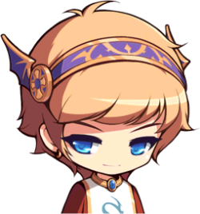
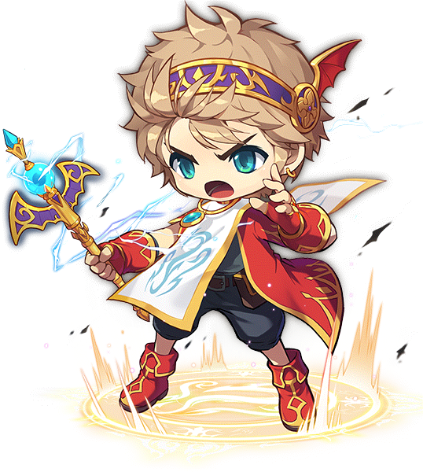

마법사 영웅
프리드
오닉스 드래곤의 왕 아프리엔이 그를 위해 저주를 대신 받았으나, 아이러니하게도 그 덕에 혼자 남게 된 영웅.
다른 영웅들이 봉인되거나 얼음속에 갇혀 잠들어있을 때 인간의 수명을 다하고 죽어, 영웅들이 깨어난 시점에서는 이미 고인.
고대전쟁이 끝난 후 각 대륙에 스며들었던 신의 창을 다시 보석의 형태로 추출해내 봉인석을 만들었다.
구 영웅들의 실질적인 리더를 맡고 있는 것은 프리드라고 보는 것이 좋을 듯 싶다. 영웅에 자원 합류하려고 한 팬텀을 받아들인 것,메르세데스, 은월은 직접 영입했을 가능성이 높다.
결전의 날에 팀 구성을 짜준 것 모두 프리드 업적이다. 봉인을 활성화한 것은 루미너스, 그 제물이 된 것은 은월이지만, 봉인을 제작·설치 하는 등 봉인의 밑바탕을 깔아둔 것 역시 프리드였다.
이때 제물이 될 존재가 필요했었는데 그 제물이 된 게 은월. 원래 자신이 하려고 했지만 은월이 말렸다. 사실 프리드는 이미 메르세데스와 함께 먼저 도착하여 싸우던 중이었고,
전투 도중 검은 마법사 몰래 봉인을 설치하기까지 했기 때문에 체력이 바닥인데다 주문을 거는 데 꼭 필요한 존재였고,
검은 마법사의 시간의 힘을 끌어내기 위해서는 루미너스의 힘 역시 필수인 상황이라 적임자가 은월밖에 없었다.
영웅들 모두와 두루두루 잘 어울렸다는 언급이 있으며, 다른 캐릭터들이 그에게는 사람을 끌어당기는 매력이 있었다고 묘사하기도 한다.
개성이 강하고 융화 안 되는 영웅들 전원이 프리드에 대한 평이 좋으며 두말없이 그를 리더로 인정하고 따랐던 것을 보면 지도력 역시 훌륭했던 듯.
이외에도 검은 마법사의 봉인 당시 원래는 자신이 제물이 될 계획을 세웠던 것이나 거울 세계에서 혼테일의 저주를 풀면 제로가 위험해지는 것이 아니냐고 걱정하면서도 필요하다면 자신이 희생할 생각을 했던 것,
자신이 이미 죽었을 수백 년 후의 세상에 닥칠 위험을 예지하고 그것을 위한 대비책을 미리 준비해두는 등의 행동을 보아 개인의 성격은 기본적으로 밝되 책임감이 강하고 이타적이며 자기희생적인 것으로 보인다.
어찌 보면 영웅이라는 이명에 가장 어울리는 성격을 가진 인물.

에반
드래곤마스터의 계승자이자 現 영웅들의 리더. 수백 년 전 인물인 다른 영웅들과 달리, 현시대에 태어난 유일한 영웅이다.
다른 영웅들처럼 수백 년 전 검은 마법사를 봉인하는 데 일조를 한 것도 아니니 아직까진 영웅이라 부르기 무색한 감도 없지 않아 있다.
그럼에도 불구하고 에반이 어린 나이에 영웅들의 공식적인 리더가 될 수 있는 것은 에반이 과거,
영웅들의 리더였던 프리드의 후계자이며, 영웅들의 힘을 하나로 합할 수 있는 리더십을 갖추고 있었기 때문이다.
헤네시스의 한 농부의 아들로 태어난 에반은 수백 년 전 멸종한 오닉스 드래곤의 마지막 자손 미르를 만나 함께 여행을 떠나게 된다.
여행 초반에는 미르와 함께 어려운 사람을 돕긴 해도 스스로 영웅이라는 사명감은 없었는데,
미르의 아버지이자 과거 프리드의 파트너였던 오닉스 드래곤 아프리엔을 만나면서 자신이 검은 마법사를 봉인했던 영웅인 프리드의 후계자임을 알게 되고,
이때부터 에반의 운명이 바뀌어지기 시작한다.
